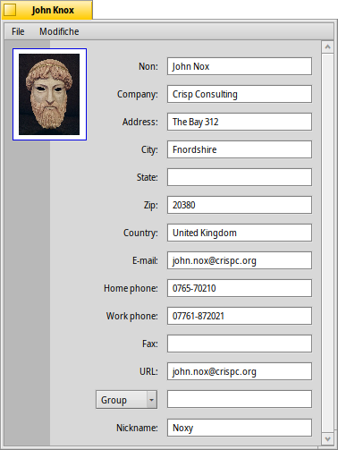
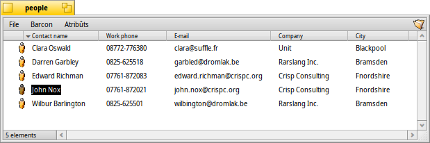

People
People
| Deskbar: | ||
| Posizion: | /boot/system/apps/People | |
| Impostazions: | ~/config/settings/People_data |
People e je une semplice base di dâts di contats che al dopre i atribûts dal filesystem di Haiku par archiviâ i recapits e altris informazions sul contat. Ogni contat al ven salvât tant che un file Person (Persone) cui siei dâts metûts tai atribûts separâts. Ducj a vegnin intabelâts e duncje si puedin cirî cuntune interogazion.
L'atribût Grup in bas al permet di assgenâ une persone a un o plui grups. Util pes spedizions di e-mail “in bloc” a un numar di personis che, par esempli, a lavorin suntun specific progjet. Il menù a tende al ufrìs ducj i grups esistents in chel moment. Se une persone e fâs part di plui di un grup, i nons dai grups a vegnin delimitâts cuntune “,” (virgule).
Chescj file Person di solit a vegnin ducj salvâts in /boot/home/people/. Par otignî une liste di ducj i tiei contats al baste vierzi la tô cartele people e visualizâ ducj i atribûts che ti interessin. Se tu sielzis di organizâ i tiei file Person in altris cartelis, al baste doprâ une interogazion par visualizâju ducj intun barcon.
Tu puedis doprâ chescj file tant che ogni altri file: tu puedis metiju in ordin daûr dai atribûts (ancje un ordin secondari se, intant che tu fasis clic, tu frachis MAIUSC) e, logjic, eliminâju, duplicâju o cambiâ il non dai file Person. Si pues modificâ in mût diret ancje lis informazions dal contat: fasint clic suntun atribût (o ALT E) si pues modificâ te stesse maniere che si cambie il non dal file. Un volte che si è in modalitât modifiche, TAB e MAIUSC TAB al fasarà saltâ di une colone in chê altre.